F0-01
The one-off pieces each level is built around, grouped by where they stand in the climb.
F0-01

F0-02

F0-03

T1-01

T1-02

T1-03

T1-04

T1-05

T1-06

T2-01

T2-02

T2-03

T2-04

T2-05

T2-06
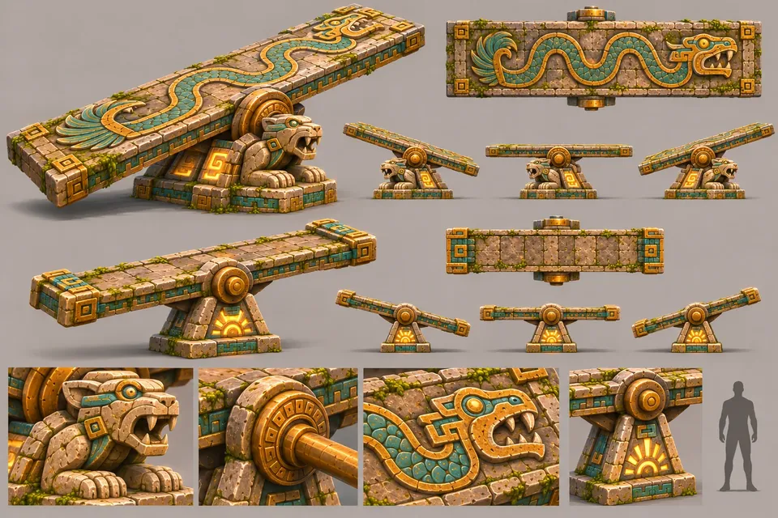
T3-01
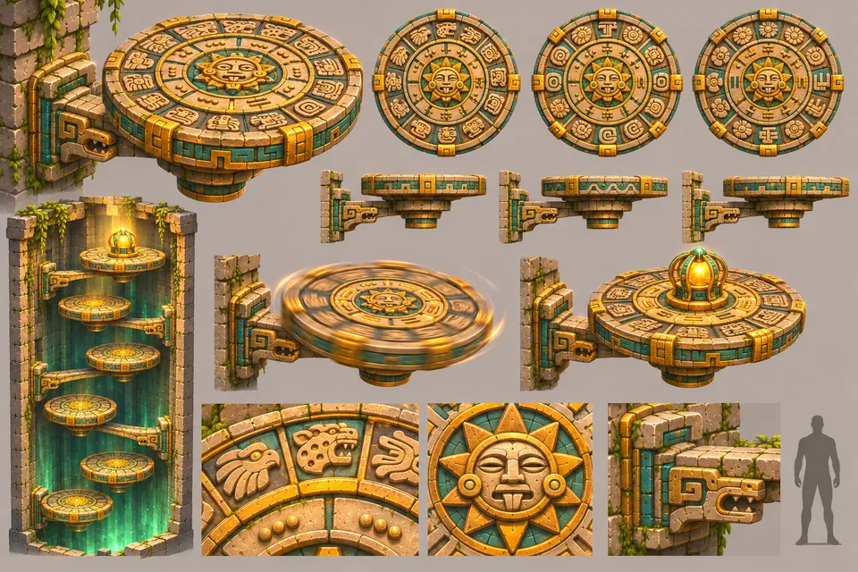
T3-02
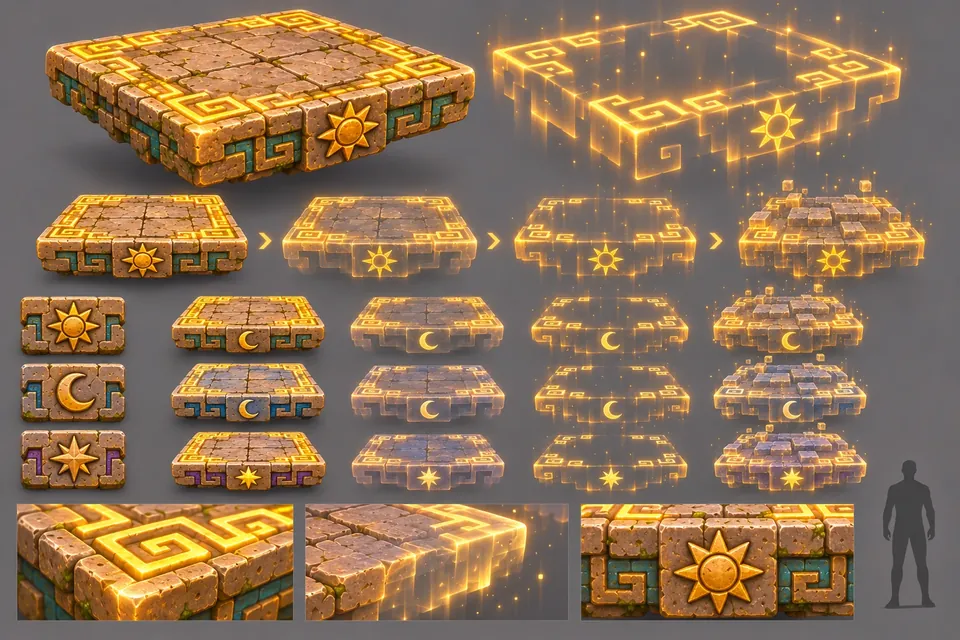
T3-03
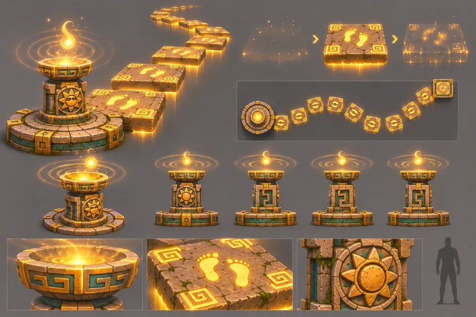
T3-04
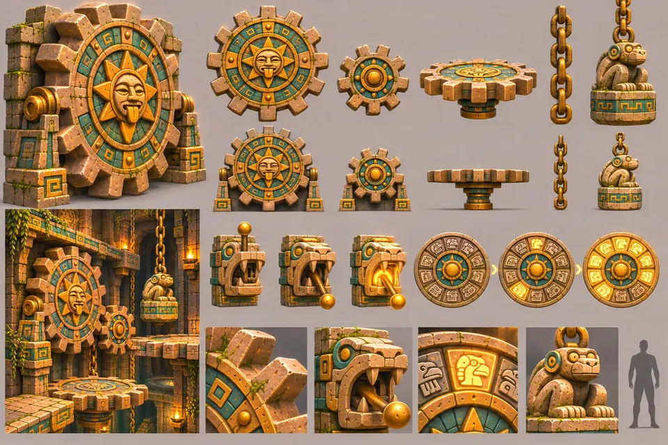
T3-05
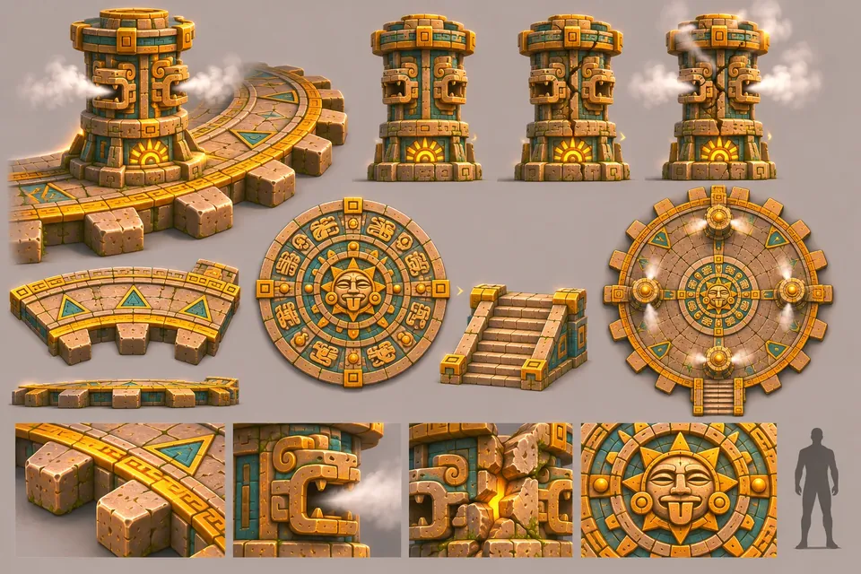
T3-06

T4-01

T4-02

T4-03

T4-04

T4-05

T4-06

T4-07
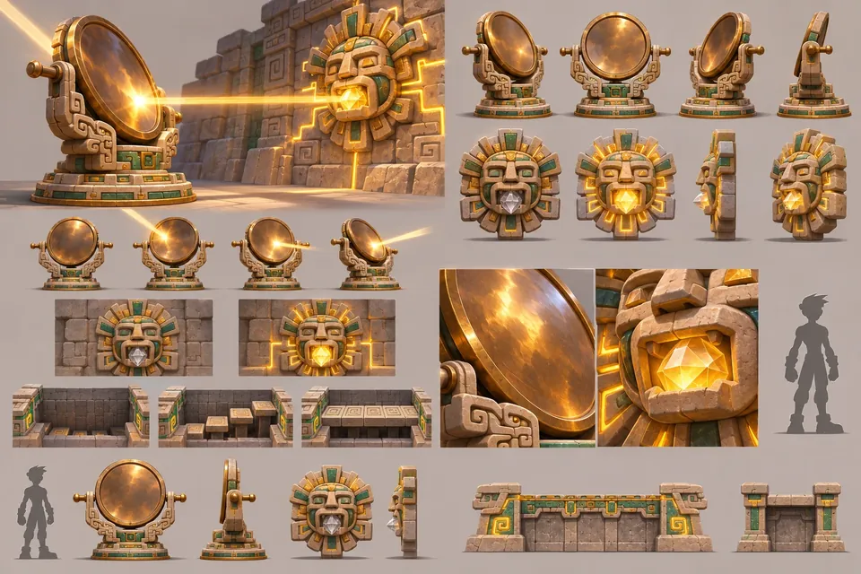
T5-01
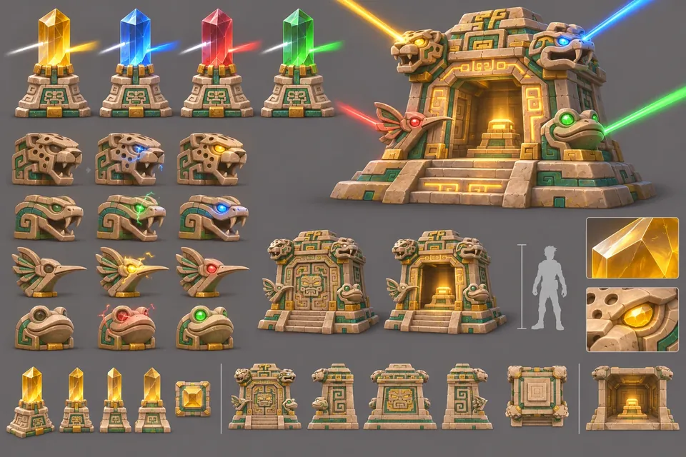
T5-02
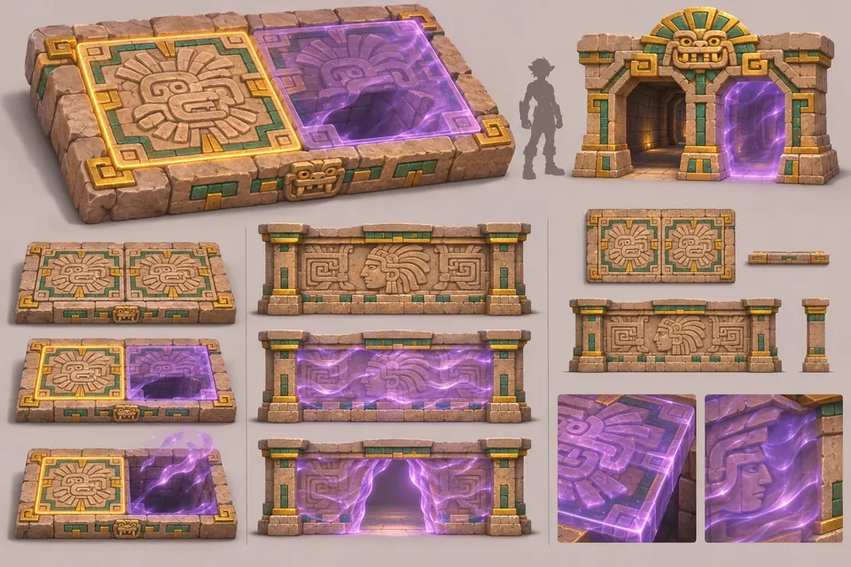
T5-03
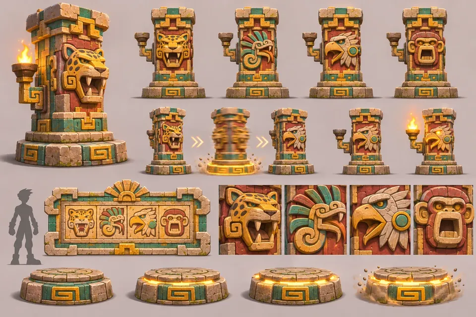
T5-04
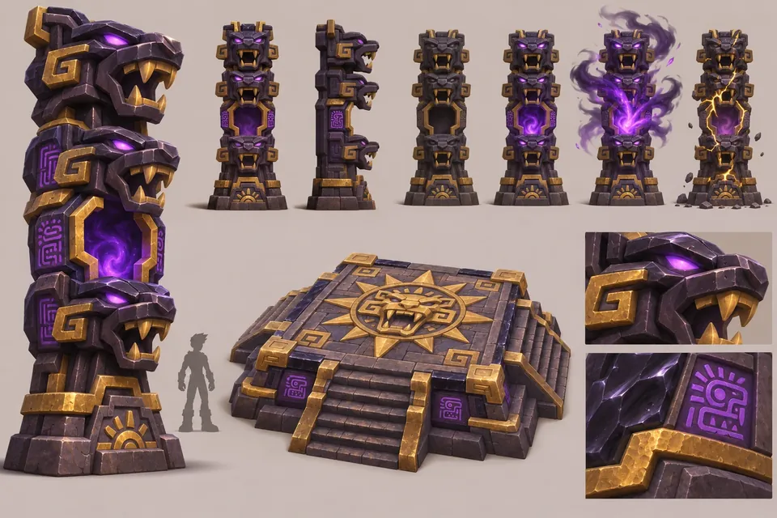
T5-05
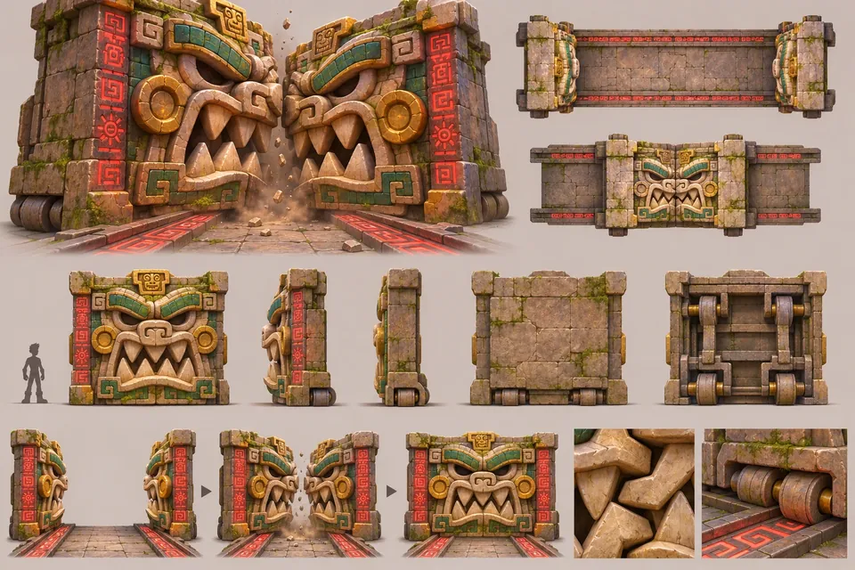
T6-01
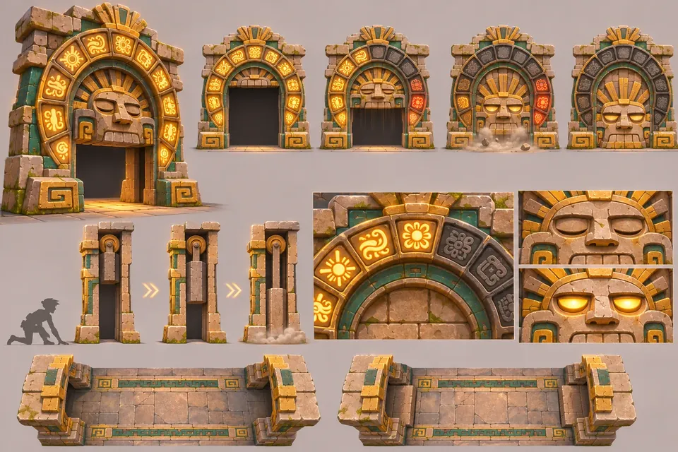
T6-02
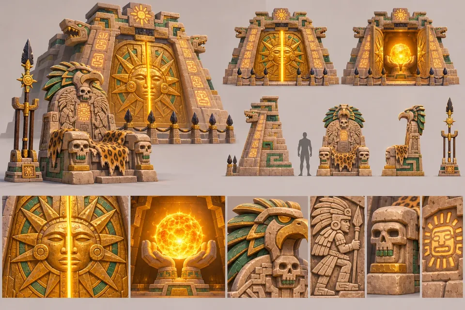
T6-03

SKY-01

SKY-02

SKY-03

PC01

SR01